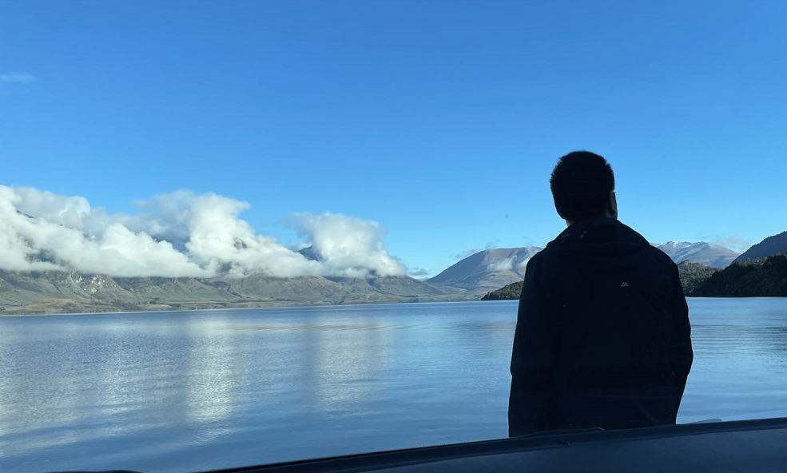

About me
Hi there! My name is Kaiqi Liao and I am a passionate junior web developer currently studying at the Coder Academy. After completing a degree in civil engineering, I decided to tap my knowledge and organizational skills to work as a construction site engineer. Now after spending 2.5 years on various construction projects, I want to challenge myself and change my career to programming.
In my spare time I enjoy music with vintage headphones. I have a few collection of them! On weekends I like go bushwalking or trekking around Sydney. Inhaling the fresh air helps me clear the mind and stay energetic. I also achieved my weight loss goal and stay fit through trekkings.
